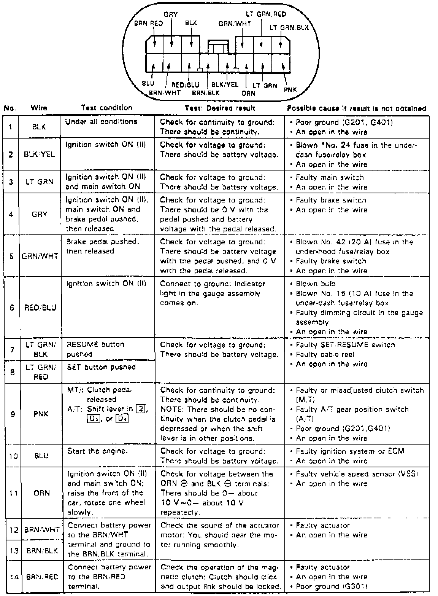

Cruise Control Module: Testing and Inspection
1. On models equipped with radio coded theft protection system, refer to Vehicle Damage Warnings for system disarming and arming procedures.2. Remove dashboard lower cover and knee bolster.
3. Disconnect 14 pin connector from cruise control unit, then inspect connector and socket terminals and repair as necessary.
Fig. 8 Control Unit Input Test:

4. If terminals are judged to be in good condition, perform input tests as shown, Fig. 8.
5. If test results are as specified, replace control unit, then reactivate radio system as outlined under Vehicle Damage Warnings.